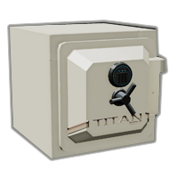

DIAPLAT™ - дистрибьютор ювелирных изделий, деятельность которого заключается
в организации посредничества между покупателями ювелирных украшений (колец, серьг, браслетов),
индивидуальными предпринимателями, занимающимися производством ювелирных товаров на заказ в розничных количествах,
и индивидуальными предпринимателями, выполняющими курьерские доставки вышеупомянутых изделий.
На данный момент ООО "DIAPLAT" заключило договора о сотрудничестве с более чем 1250 партнёрами из 83 субъектов Российской Федерации,
а также столичных городов ближайших соседей Российской Федерации (Минск, Республика Беларусь; Киев, Украина).
Прямое взаимодействие с производителями товаров и предоставителями курьерских услуг, обладающих максимальным радиусом территориального покрытия 90 км,
позволяет понизить цену и срок предоставления услуг для конечного потребителя.
Процесс предоставления услуг делится на следующие шаги:
- Оформление заказа: перейдя в раздел "Конструктор" клиент выбирает желаемые тип и элементы ювелирного изделия. Лучшие компоненты - большая стоимость. Закончив выбор свойств украшения, покупатель выбирает подходящий способ оплаты, предоставляет необходимые персональные данные и осуществляет перевод. Выполнение заказа начинается с момента получения денежных средств.
- Производство ювелирного изделия: в течение трёх календарных дней с момента оплаты на предоставленную покупателем электронную почту будет отправлено письмо с контактами исполнителя услуги производства ювелирного изделия для дальнейшей связи с исполнителем. ООО "DIAPLAT" гарантирует выполнение производства в течение семи рабочих дней. В случае неисполнения услуги в указанный срок покупатель имеет право требовать полный возврат средств, либо исполнение услуги с 80-ти процентной компенсацией оплаты. Завершение производства ювелирного изделия сопровождается письмом от магазина DIAPLAT™.
- Осуществление курьерской доставки: в течение трёх календарных дней с момента завершения производства ювелирного изделия на предоставленную покупателем электронную почту будет отправлено письмо с контактами исполнителя курьерских услуг для дальнейшей связи с исполнителем. ООО "DIAPLAT" гарантирует выполнение доставки в течение семи рабочих дней с момента завершения производства ювелирного изделия. В случае неисполнения услуги в указанный срок покупатель имеет право требовать полный возврат средств, либо исполнение услуги с 80-ти процентной компенсацией оплаты (возможна повторная компенсация в случае невыполнения в срок обоих услуг, в таком случае общий размер компенсации составит 96% от суммы заказа). Доступ непосредственно к ювелирному изделию заблокирован для курьера, в силу способа хранения и транспортировки. Ювелирное изделие доставляется в небольшом титановом сейфе, вскрытие которого силовыми методами не представляется возможным, сейф может быть открыт исключительно с помощью кодовой комбинации, присылаемой покупателю в электронном письме в момент начала осуществления курьерской доставки. Сохранение изделия гарантировано компанией ООО "DIAPLAT".
Желаем приятных покупок!
